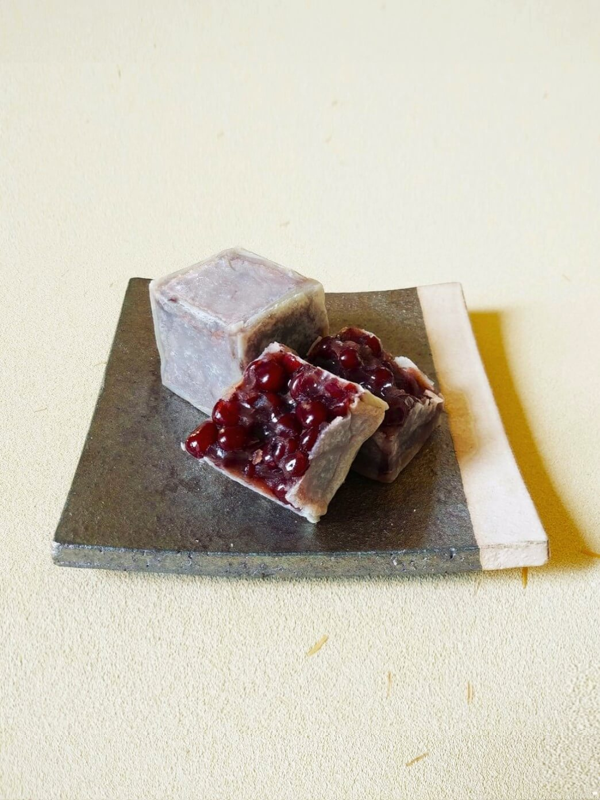
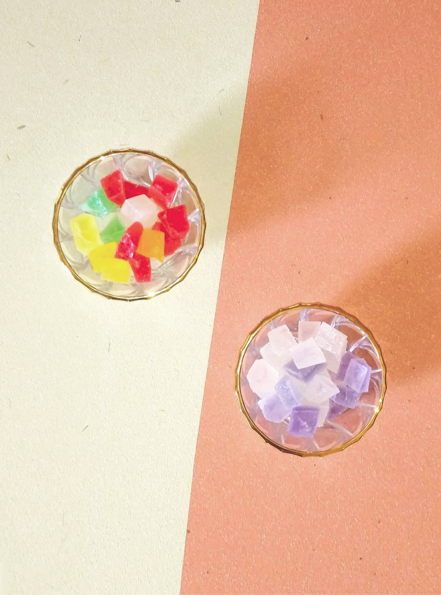

- むつの花

厳選したもち米と和三盆糖を
原料に仕上げました。長く茶道の
友として、進物としてご重用頂く
開業以来の銘菓です。
販売期間 通年
賞味期限 十五日間
特定原材料など なし
- 粉菓子

昔ながらの越後の国の伝統の、
小豆こし餡入りの落雁です。
寒梅粉と味甚粉の郷土の
糯米の風味をお愉しみください。
販売期間 通年
賞味期限 十五日間
特定原材料など なし
- 織部上用

加賀丸芋の上品なお饅頭です。
きめ細やかな生地で小豆こし餡を
包んで蒸しあげました。滋味深い
山芋の風味をお愉しみください。
販売期間 冬
消費期限 三日間
特定原材料など 山芋
- うぐいす餅

冬から春の、やわらかな求肥と
小豆こし餡のお菓子です。
抹茶と新潟県産の青大豆の
きな粉をまぶしました。
販売期間 冬から春
消費期限 三日間
特定原材料など 大豆
- 桜餅

旨味のある蒸かしたての糯米の、
新潟県産のコガネモチの桜餅です。
しっとりと滑かな小豆こし餡と
桜葉の香りをお愉しみください。
販売期間 春
消費期限 二日間
特定原材料など なし
- 柏餅
柏の薫る上新粉のういろうで
小豆こしあんをとじました。
節句等に数がご入用の場合は
お早めにご連絡ください。
販売期間 夏
消費期限 二日間
特定原材料など なし
- 若鮎

生姜味の焼き皮にやわらかい
求肥餅が一本入っています。
見た目も香味も爽やかに
快い夏のお菓子です。
販売期間 夏
消費期限 三日間
特定原材料など 卵、小麦
- 松笠

もっちりとした黒糖生地の
ふくさ焼きです。薄く延ばした
生地でくるりと柔らかく炊いた
大納言小豆の粒餡を包みました。
販売期間 秋
消費期限 三日間
特定原材料など 卵、小麦
- 水羊羹

冬の雪解け水と自慢のこし餡の
水ようかんです。ボイル殺菌せず
日持ちはしませんが小豆と本葛の
風味が口の中でほどけ広がります販売期間 夏
消費期限 冷蔵にて七日間
特定原材料など なし
- 越の焼栗

新栗の風味にこだわり、見附市堀溝の
生栗を蒸し表面を焦がして仕上げました。
短い期間しかお出しできませんが
秋の味覚をお愉しみください
販売期間 秋
消費期限 三日間
特定原材料など なし
- きんつば

北海道産大納言の新小豆のうま味を楽しめるきんつばです。
販売期間 冬から春
消費期限 七日間
特定原材料など 卵、小麦
価格 一個 二四〇円
- 中花
中身はこし餡です。
販売期間 注文のみ
消費期限 三日間
特定原材料など 卵、小麦
価格 一個 二一〇円
- 胡桃

信州の和ぐるみを添えた小豆粒あんの東饅頭です。第二四回全国菓子大博覧会で名誉総裁賞を受賞しました。
販売期間 通年
消費期限 七日間
特定原材料など 卵、小麦、胡桃
価格 一個 一六〇円
- 松の実

黄身あんをほろりと崩れるクッキー生地で包んでいます。ひび割れた生地に松の実を添えた上品な焼菓子です。
販売期間 通年
消費期限 七日間
特定原材料など 小麦、大豆、卵、乳
価格 一個 一六〇円
- 栗饅頭

蜜漬けの栗を微塵に刻みいれ餡を炊きました。艶のある生地が栗の風味を閉じ込めていています。
販売期間 通年
消費期限 七日間
特定原材料など 卵、小麦
価格 一個 一六〇円
- 花篝

長岡市横枕町地酒「お福正宗」を含ませ、小豆こしあんを包んだ桃山です。
販売期間 通年
消費期限 七日間
特定原材料など 卵
価格 一個 一六〇円
- 最中
創業以来の製法の餡を特注の強めに焼き付けた焦がし種で挟みました。
販売期間 通年
消費期限 十五日間
特定原材料など なし
価格 一個 一八〇円
- かほり 蔵のかほり

シャリシャリとした歯触りの快いお干菓子です。
販売期間 夏から秋
賞味期限 二ヶ月間
特定原材料など 個別に記載
価格 一袋 三六〇円
- くず湯

古くからの滋味に富んだ葛の味をお楽しみいただけます。塩漬けの花を入れた桜と抹茶の二種類です。
販売期間 通年
賞味期限 三ヶ月間
特定原材料など なし
価格 一袋 一三〇円
- 干菓子

阿波和三盆糖を用いた落雁を紅白に打ち分けました。
販売期間 通年
賞味期限 二ヶ月間
特定原材料など なし
価格 五個入 三〇〇円
- 胡桃玉
信州の濃厚な和ぐるみと新潟県産大豆のきな粉のすはまです。
販売期間 冬から春
賞味期限 一ヶ月間
特定原材料など 胡桃、大豆
価格 五個入 三〇〇円
- 石の里

名前を昔、石の名産地として栄えた村松の地に因む卵と和三盆糖、寒天のお干菓子です。
販売期間 通年
賞味期限 三ヶ月間
特定原材料など 卵
価格 五枚入 一八〇円
- 金倉山

バターカステラの中にシロップ漬けのフルーツをちりばめ、実り豊かな故郷の山並みを表現しました。
販売期間 通年
消費期限 十五日間
特定原材料など 卵、乳、小麦、
大豆、リンゴ、オレンジ
価格 一個 一八〇円
- フロランタン

アーモンドヌガーとバニラのサブレのフロランタンです。
販売期間 通年
賞味期限 一ヶ月間
特定原材料など アーモンド、
オレンジ、小麦、大豆、卵、乳
価格 一袋 一八〇円
- エンガディナー

蜂蜜とくるみのやわらかいキャラメルを挟んだ焼菓子です。
販売期間 通年
賞味期限 一か月間
特定原材料など アーモンド、
くるみ、小麦、卵、乳
価格 一袋 一五〇円
- ラムボール
ラム酒とブランデーのとスパイスの香る生地といちじくの大人のお菓子です。
販売期間 通年
賞味期限 要冷蔵十五間
特定原材料など オレンジ、
大豆、小麦、卵、乳
価格 一袋 二〇〇円
- 煉羊羹

手間と技術を要するお菓子です。家伝の味をご堪能ください。
販売期間 通年
賞味期限 三ヶ月間
特定原材料など なし
価格 一本 九〇〇円
- くずきりそうめん

氷の細片を入れると味わいが引きたちます。本葛の風味をお試しください。
販売期間 夏から秋
消費期限 冷蔵にて十日間
特定原材料など なし
価格 一個 三〇〇円
- 栗きんつば
ふっくらとした栗甘露煮を、粒を残した大納言小豆に添えました。冷蔵庫で冷やしていただくとより一層おいしくお召上がりいただけます。
販売期間 夏から秋
賞味期限 二ヶ月間
特定原材料など なし
価格 一個 三〇〇円
- 梅のつゆ 青梅

やや硬めに仕上げた自家製の梅酒のゼリーの中に青梅を一つ浮かべましたました。涼味ある夏限定のお菓子です。
販売期間 夏から秋
賞味期限 二ヶ月間
特定原材料など なし
価格 一個 三〇〇円
- 花ぬすびと

やや硬めに仕上げた水色のゼリーの中に桜花塩漬けを一つ浮かべています。涼味ある夏限定のお菓子です。
販売期間 夏から秋
賞味期限 一ヶ月間
特定原材料など オレンジ
価格 一個 三〇〇円